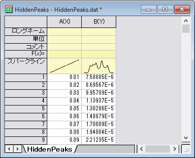
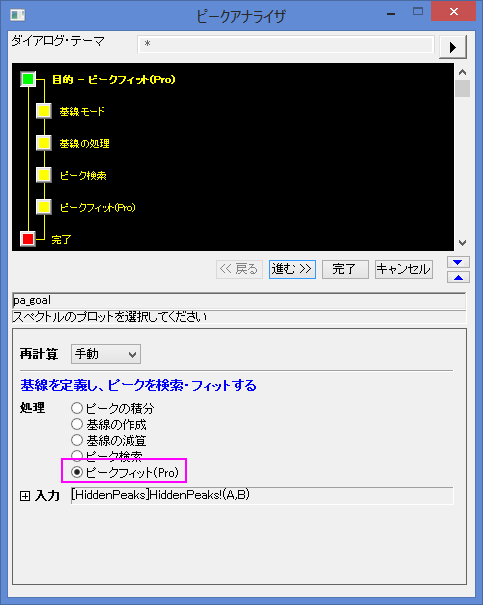
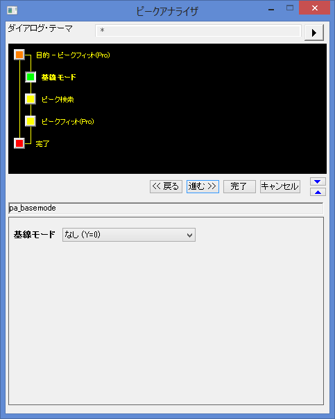
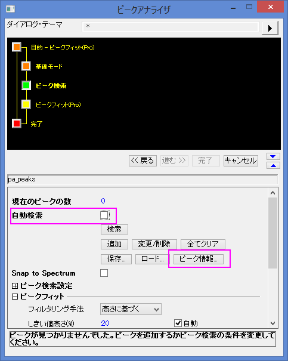
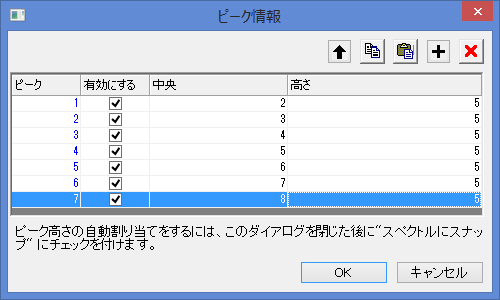
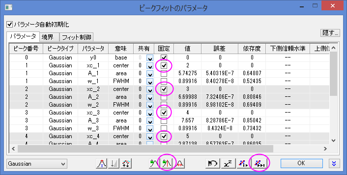
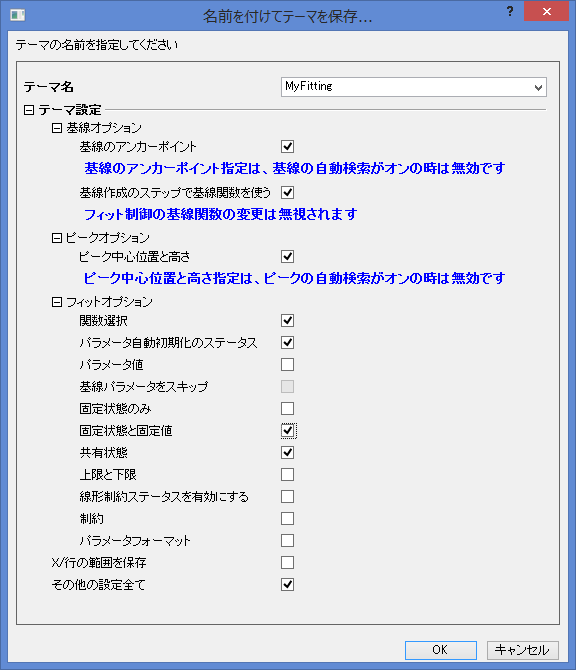
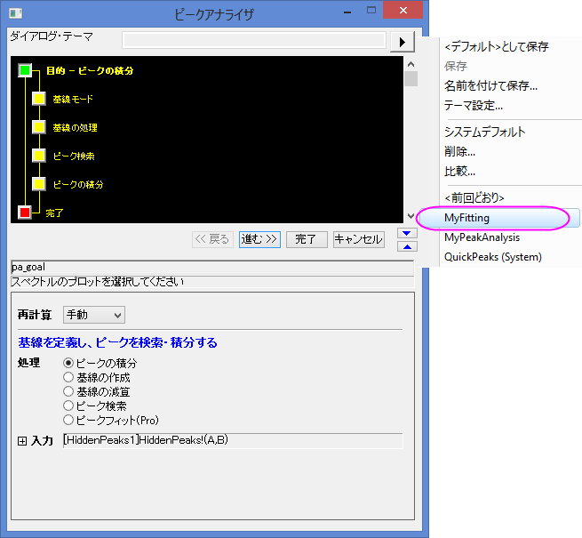

事前設定されたピークパラメータを使ってピークフィットを行う
PeakFit-Preset-PeakParameter
概要
場合によっては、事前設定されたピークパラメータでピークフィットを実行したい場合があります。たとえば、ピークの数が固定されたデータセットが多数あり、これらのピークの中心がデータセットごとに変化しない場合などです。このような場合は、主に他のパラメータ、例えば高さなどを解析します。ピークアナライザのテーマ機能を使用すると、ピークパラメータを固定して簡単にピークフィッティングを実行できます。
必要なOriginのバージョン: OriginPro 2016 SR0以降
学習する項目
- ピークアナライザーの設定をテーマとして保存し、再利用する方法
- ピークパラメータの固定方法
ステップ
ピーク位置とピークパラメータを含むテーマを保存する
- 新しいワークシートを開き、<Originのインストールフォルダ>\Samples\Spectroscopy\HiddenPeaks.datファイルをインポートします。
- 2列目を選択し、メニューから解析：ピークと基線：ピークアナライザを選び、ピークアナライザを開きます。

- 最初のページで、ゴールグループのピークのフィットを選びます。進むをクリックし、基線モードページに移動します。

- 「基線モード」ページで、基線モードドロップダウンリストからなしを選びます。進むをクリックし、ピーク検索ページに移動します。

- 「ピーク検索」ページで
- 自動検索のチェックを外します。これで手動でピークを検索できます。ピーク情報ボタンをクリックして、ピーク情報ダイアログを開きます。

- ピーク情報ダイアログで、追加ボタンを7回クリックして、7つのピークを追加します。ピーク中心と高さを下図のように入力します。

OKをクリックしてピークアナライザーに戻ります。
- 進むをクリックし、ピークのフィットページに移動します。
- ピークフィットページで以下のように設定します。
- フィット制御ボタンをクリックして、ピークフィットのパラメータダイアログを開きます。
- ピークフィットのパラメータダイアログの全ピーク中心の固定/解除ボタンをクリックして固定します。そして収束までフィットボタンをクリックします。フィットが完了したら、OKをクリックしてピークアナライザーダイアログに戻ります（収束までフィットについての重要な情報を確認してください）。

- 上側パネルでダイアログテーマのコントロールの右にある右向き三角のボタンをクリックします。メニューから名前を付けて保存を選択します。名前を付けてテーマを保存 ダイアログが開きます。
- 名前を付けてテーマを保存ダイアログで、テーマ名をMyFittingとして入力します。以下の画像のように、各設定のチェックボックスのチェックを設定します。

OKをクリックしてテーマを保存します。すると、ピークアナライザダイアログに戻ります。
- ピークアナライザにある「完了」ボタンをクリックして、分析を終了します。
テーマを再利用する
- 別の新しいワークブックを開き、<Originのインストールフォルダ>\Samples\Spectroscopy\HiddenPeaks.datファイルをインポートします。
- 2列目を選択します。
- メニューから「解析：ピークと基線：ピークアナライザ」を選び、ピークアナライザを開きます。
- ピークアナライザの最初のページで、ダイアログテーマの右にある右向き三角のボタンをクリックします。ショートカットメニューからMyFittingを選びます。

- 進むをクリックして、各ステップの設定が正しいかどうかをチェックします。ピーク検索ページで、ピーク中心と高さの設定が前回と同じであることを確認できます。
- 最後のページでフィット制御ボタンをクリックして、ピークフィットのパラメータダイアログを開きます。全ピーク中心が固定に設定され、値が前回と同じか確認します。OK をクリックして、ピークアナライザに戻ります。
- 完了ボタンをクリックして分析を完了します。得られた結果が、前回の結果と同じかどうかチェックします。